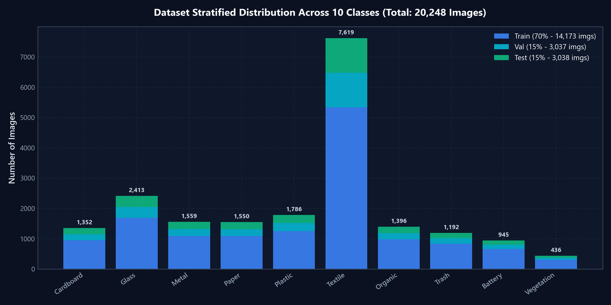
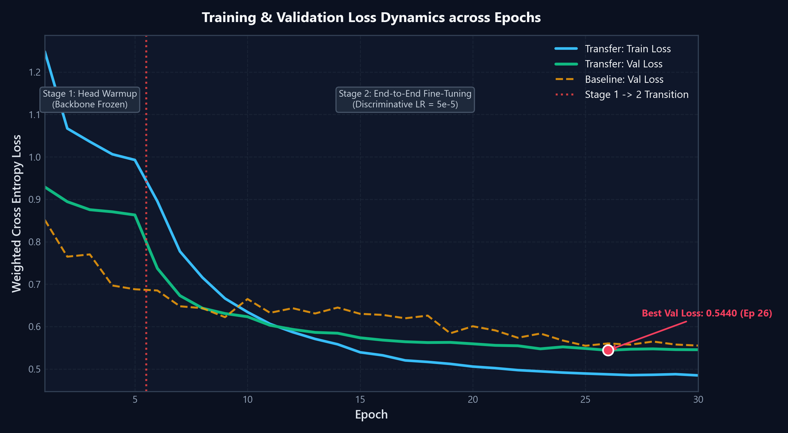
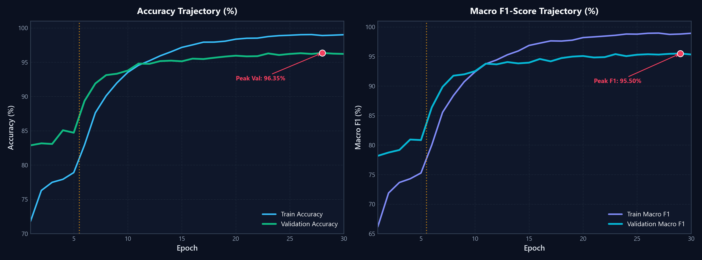
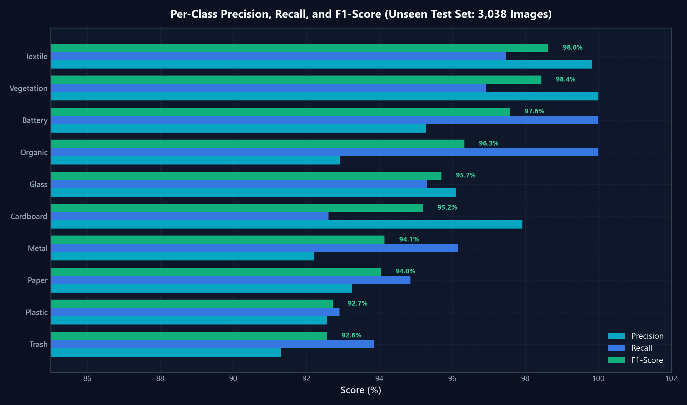

Stratified Data Preprocessing & Augmentation Pipeline
Balancing 20,248 waste images across 10 categories with robust physical augmentations
Industrial waste arrives in uneven volumes (e.g. textiles are common, batteries are rare). To prevent the AI from bias, we divided 20,248 high-resolution photos into three strictly non-overlapping subsets: 70% for Training, 15% for Validation tuning, and 15% for Blind Testing.
-
Input Standardization: Every image is resized to
224 × 224 × 3pixels using bicubic interpolation and normalized to zero-mean unit-variance (ImageNet μ & σ). -
Physical Augmentation: Simulates real conveyer belts via
RandomHorizontalFlip(p=0.5),ColorJitter(±20% brightness/contrast to simulate warehouse shadows), andRandomAffine(±15° rotation). -
Entropy Calibration: Label smoothing (
ε = 0.05) prevents catastrophic overconfidence when encountering dirty or crushed items.

EfficientNet-B0 Backbone & Two-Stage Training Protocol
Leveraging pre-trained visual primitives with progressive backbone unfreezing
Instead of training a model from scratch, we start with a pre-trained EfficientNet-B0 (which already understands edges, textures, and shapes). In Stage 1 (Warmup), we freeze the backbone so we don't ruin its learned knowledge while training our new 10-class sorting head. In Stage 2 (Fine-Tuning), we gently unfreeze the whole network with a tiny learning rate.
-
Compound Scaling Economy: EfficientNet-B0 contains only 4.02 Million parameters (compared to ResNet-50's 25.6M), processing frames in 4.7 ms (200+ FPS) on edge sorting hardware.
-
Industrial Sorting Head:
AdaptiveAvgPool2d(1) → Dropout(p=0.3) → Linear(1280, 10)with Xavier uniform weight initialization. -
Stage Handover at Epoch 5: Visible in the graph where training loss takes a steep drop as the feature extractor begins customizing to waste materials.

Accuracy Evolution, Macro F1 & Cosine Convergence
Reaching 96.35% Peak Validation Accuracy without overfitting
During the first 5 warmup epochs, accuracy stays at ~83%. The moment Stage 2 begins and all layers are trained together, accuracy surges past 93% in just 4 epochs, stabilizing at 96.35%. The Macro F1 curve tracks accuracy closely, proving every category is recognized reliably.
-
Cosine Annealing Decay: The AdamW learning rate smoothly decreases from
5e-5down to1e-6, allowing the neural net to settle into the optimal global minimum. -
Absence of Overfitting: The training and validation curves stay tightly locked together without diverging, confirming strong generalization to unseen packaging.
-
Early Stopping Checkpoint: The model weights at Epoch 29 achieved 95.50% Macro F1 and are permanently saved as the production inference checkpoint.

Industrial Performance, Safety & Environmental Return
95.53% Unseen Test F1-Score with Real-Time Grad-CAM Verification
When tested on 3,038 new waste photos the model had never seen before, it achieved a 95.53% Macro F1-Score. High-danger categories like hazardous lithium batteries achieved 97.6% F1, preventing recycling plant fires and ensuring high-purity sorted bales.
-
Standout Industrial Gains: Two-stage transfer learning delivered significant improvements on critical streams: Battery (+2.81%), Plastic (+1.56%), and Metal (+1.22%).
-
Explainable AI (Grad-CAM): High-voltage heatmaps show operators exactly which physical features (battery terminals, plastic ribbing) drove the AI's classification decision.
-
Ready for Pneumatic & Robotic Arms: Sub-5ms inference enables high-speed robotic diverters to sort items continuously at line speeds up to 120 picks per minute.
